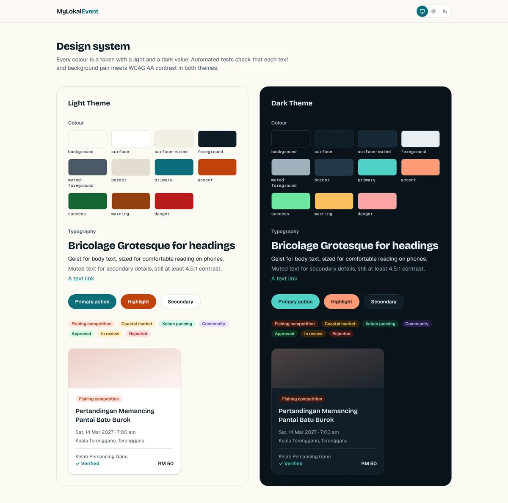
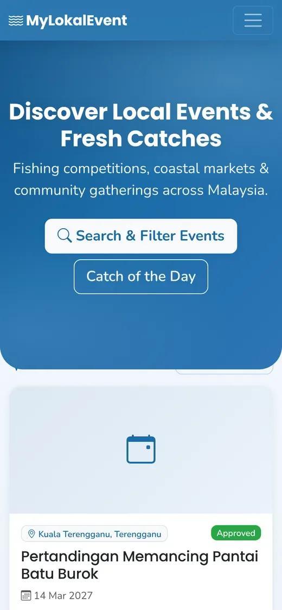
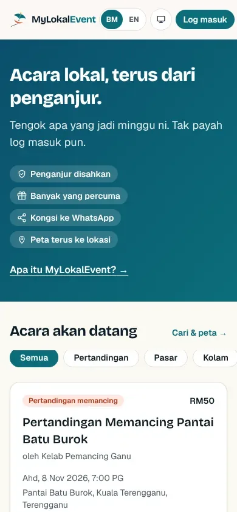
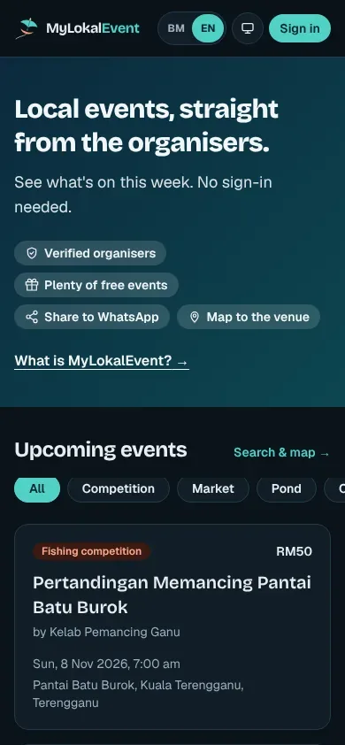
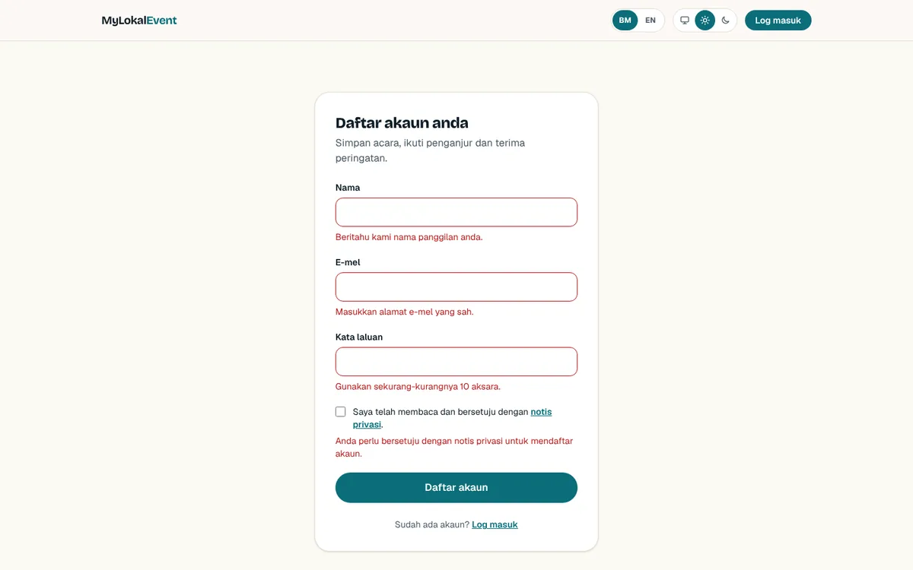

MyLokalEvent started as coursework for TEB3323: a place to find local events in Malaysia, built with FastAPI, Supabase and a vanilla JavaScript single-page app on Bootstrap. It worked as a demo. For v2 I asked a different question: what would it take for real organisers and members to trust it with their events, their data and their money?


1. Security came first
A review of v1 turned up problems that are fine in a classroom and serious in production:
| v1 | v2 |
|---|---|
| Login tokens in localStorage, readable by any injected script | Sessions in httpOnly cookies that JavaScript can't read |
| Banned users stayed signed in for up to an hour | Suspending someone signs them out everywhere, immediately |
| The backend used the all-powerful service key for every query | Row Level Security on every table, tested in CI |
| A default "change-me" secret and demo passwords in the repo | The app refuses to start with placeholder secrets |
| A credit wallet that could be spent twice | Paid only after a signed, one-time Stripe webhook |
| No security headers | CSP, HSTS, frame blocking and the rest |
2. One app, and the database as the last line of defence
v2 drops the separate API server. It's one Next.js app on Vercel, and the rules about who can see and change what live in Postgres itself. A bug in one page can't leak another user's data, because the database won't hand it over.
3. Money has to be boring
Paid listings are where a small bug costs someone real money, so the flow is deliberately dull. An event is only marked paid when Stripe's signed webhook arrives, the event id is recorded so the same webhook can't be processed twice, and the status change and the audit log entry happen in one database transaction.
4. It looks like a product
v1 used Bootstrap defaults and one blue for nearly everything. v2 has its own design system: deep sea teal, sunset coral, warm sand, a colour for each event category and a wau bulan logo. Every colour has a light and a dark value, and a test checks 60 text and background pairs against WCAG AA in both themes, so text can't vanish when you switch.

5. It speaks BM first
v1 was English only, while much of its audience reads Bahasa Melayu first. v2 opens in BM unless your browser prefers English, has a switcher on every page, and puts the language in the URL so shared links open in the right one. The build fails if any translation is missing.




What the data looks like
| Table | What it holds |
|---|---|
| profiles | One row per user: name, role (member, organiser, admin) and status |
| organisers | Organiser details and verification state |
| events | When, where, fee, coordinates and review status |
| event_images | Photos, stored with random names and stripped of EXIF and GPS |
| saved_events, follows | What a member saved and who they follow |
| payments, stripe_events | Every payment attempt, and webhooks already handled |
| audit_log | Append-only record of every admin action |
6. It's built like a team project
v1 was tested by hand. v2 has a spec written before the code (requirements, a design and a task list), small pull requests, and CI that runs lint, formatting, type checks, unit tests, database tests, a production build and secret scanning on every one. Writing the spec first is also what let me split work between two AI coding assistants and myself without us stepping on each other.
v2 is still in progress; finishing the MVP is next on my list. It's live at mylokalevent.vercel.app, and the code is on GitHub.